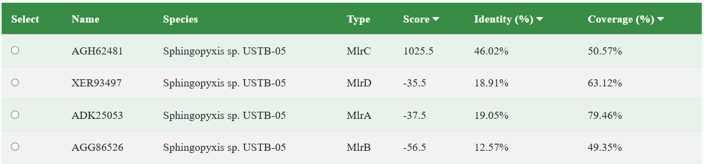

NGL (3D Viewer)
The NGL 3D View option from the CHMDD structure section utilizes the WebGL-based NGL Viewer [Rose2015], [Rose2016], to display PDB structures in three-dimensions.
Various general display options are available from the main window and two types of views are
available:
Structure View
Protein-Ligand Interaction View
General Display Options
Various display options are available from the 'General Display Options' area.
- Download PDB: Download the protein-ligand complex structure file in PDB format
- Spin: Start or stop spinning the structure along the y-axis
- Fullscreen: Activate or disable fullscreen mode
- Center: Reset molecule position
- Background: Choose black,white or gray background color
- Focus: Move clipping planes closer to or away from the center of rotation
- Screenshot: Including three customizable options:
- Transparent Background: Choose whether the screenshot background is transparent
- Trim White Edges: Select whether to trim the white edges of the image
- Resolution Multiplier: Choose the resolution multiplier for the screenshot (from 1 to 5 times)

Mouse Controls
Rotate the view around the center of the canvas
- Left-mouse drag
- One-finger drag
Translate the view and move the center of rotation
- Right-mouse drag
- Two-finger drag
- Ctrl left-mouse drag
Zoom the view in and out
- Scroll-wheel
- Two-finger pinch
- Shift left-mouse drag
Show information (tooltips) about the object close to the mouse cursor or finger tap such as atoms or bonds
- Mouse hover
- Finger tap
Move the clipping/focus planes in and out
- Shift scroll-wheel
Increase/decrease the isolevel value of the selected electron density map
- Ctrl scroll-wheel
Combination "Move the clipping/focus planes in and out" and "Zoom the view in and out"
- Middle-mouse drag
- Shift-ctrl scroll-wheel
Distance, angle, dihedral measurements: To begin a measurement, use the right-mouse button (or the left-mouse button and the Control key/Control key and mouse click) to select 1, 2, 3 or 4 atoms. Complete the measurement by selecting the final atom twice. Depending on how many atoms are selected, the distance (2 atoms), the angle (3 atoms) or the dihedral angle (4 atoms) is measured and displayed. Deselect all atoms with a right-click in empty space. To remove a measurement, re-select all involved atoms and then the last atom twice in a row.
Structure View
Various display options are available from the Structure View tab of the 3D view page:
- Toggle Protein and Ligand Style: Show or hide the protein or ligand structure
- Display Style for protein: View the protein structure in different representation styles (Cartoon, Ball & Stick, Wireframe, Surface, Ribbon, Label, Spacefill/CPK, Rope, Tube, Point and Backbone)
- Display Style for ligand: View the protein structure in different representation styles (Ball & Stick, Wireframe, Label, Spacefill/CPK,)
- Protein Color: Color the protein structure using different color schemes (Color by Rainbow, Secondary Structure, Elemen/CPK, Chain, Residue and Hydrophobicity)
- Ligand Color: Color the ligand structure using different color schemes (Color by Element, Temperature Factor and Hydrophobicity)
- Protein Opacity: Control the opacity of the protein in the 3D structure view
- Ligand Opacity: Control the opacity of the protein in the 3D structure view
Color schemes
Protein-Ligand Interaction View

Protein-Ligand Interaction View offers various ligand-related display options:
- Interactions: Show or hide various interactions (Hydrophobic Contacts, Hydrogen Bonds, Halogen Bonds, Metal Interactions, Pi Interactions)
- Label: Display or hide labels for the ligand and neighboring residues
- Opacity: Change the opacity of the ligand binding pocket.
- Near Clipping: Adjust the clipping plane for the ligand binding pocket.
- Radius Clipping: Change the radius of the clipping sphere around the ligand binding pocket.
- Surface Type: including four types (High quality molecular surface, Solvent accessible surface, Molecular surface,Van der Waals surface)
- Surface Color: including three colors (Hydrophobicity, Element)
|
|
hydrogen bonds |
|
|
hydrophobic contacts |
|
|
halogen bonds |
|
|
metal interactions |
|
|
cation-pi interactions |
|
|
pi-stacking interactions |
Interaction Types Definition and Calculation Parameters
Hydrogen Bonds
Hydrogen bonds [Stickle1992], [Zhou2008] are calculated according to the following parameters between donor and acceptor atoms.
Note that hydrogens are not required for the generation of hydrogen bonds, and indeed are ignored if present. While the aim is to find all potential hydrogen bonds a comprehensive global analysis to find the optimal hydrogen bonding network is not performed as this would require a global analysis of protonation states.
Donor atoms: In general all nitrogen, oxygen, and sulfur atoms that have a hydrogen count greater 1 according to our valence model can be considered donors (for carbon as a donor see the heading Weak Hydrogen Bonds). Any nitrogen in a His ring may also be a donor.
Acceptor atoms: All oxygen atoms are considered to be acceptors. Nitrogen atoms are considered to be acceptors when the charge is less than 1 and at least one lone pair is not conjugated according to our valence model. Aminoacids (table-based, in addition to the general rule). Any nitrogen atom in a ring in His (to work around the ambiguity of where the charge is). Sulfur atoms are considered to be acceptors if the formal charge is -1 or if they are present in Cys or Met.
The maximum donor to acceptor distance is generally 3.5 Å and 4.1 Å for bonding with sulfur atoms. Angles are checked according to the following guidelines:
- Maximum 45 degree deviation from optimal (90 degree) acceptor angle (AA-A-D)
- Maximum 45 degree deviation from optimal (90 for sp2, 60 for sp3) donor angle (DA-D-A)
- Maximum 90 degree deviation from optimal (0 degree) acceptor plane angle (A-D to A-AA-AA’ or AAA instead of AA’)
- Maximum 30 degree deviation from optimal (0 degree) donor plane angle (D-A to D-DA-DA’ or DAA instead of DA’)
| Legend: Donor (D), Hydrogen (H), Donor-Antecedent (DA), Donor-Antecedent-Antecedent (DAA), Acceptor (A), Acceptor-Antecedent (AA), Acceptor-Antecedent-Antecedent (AAA). |
{kind=link}
Halogen Bonds
Halogen bonds [Auffinger2004] are calculated according to the following parameters: Donors can be X-C, where X is Cl, Br, I or At but not F (no sigma-hole). Acceptors can be Y-{O|N|S} where Y is C, P, N, or S. The maximum Halogen bond distance is 3.5 Å. The maximum angle deviation is 30 degrees optimal in which the C-X···O angle ≈180° (consistent with a strong directional polarization of the halogen) and the X···O-Y angle ≈120°.
Hydrophobic Contacts
Hydrophobic contacts [Freitas2017] are calculated according to the following parameters: Contacts are made between carbons that are connected only to carbon or hydrogen, the default maximum hydrophobic distance is 4.0 Å, for atoms that interact with several atoms in the same residue, only the one with the closest distance is kept, and hydrophobic contacts between pi-stacked aromatic rings are removed.
Metal Interactions
Metal Interaction types are defined as dative bonds and ionic/ionic-type interactions between metal classes and potential metal binding partners.
Nucleobases
- Sugar oxygens (atom names O2’, O3’, O4’): dative, ionic
- Selected base nitrogens (N3, N4, N7): dative
- Selected base oxygens (O2, O4, O6): dative, ionic
Aminoacids
- Oxygen in backbone: dative, ionic
- Oxygen in Asp, Glu, Ser, Thr, Tyr, Asn, Gln sidechain: dative, ionic
- Sulfur in Cys sidechain: dative, ionic
- Nitrogen in His sidechain: dative
Halogens
- Dative, ionic
Functional groups from ligands
- O, N, S, Halogens: dative
- O, S, Halogens: ionic
Metals classes
Alkali & Alkaline earth Li, Na, K, Rb, Cs, Mg, Ca, Sr, Ba and other Al,Ga,In,Tl, Sc, Sn, Pb, Bi, Sb, Hg
- ionic-type
Transition metals
- dative, ionic
- metal-metal
Pi Interactions
Cation-Pi
Cation-Pi interactions [Gallivan1999] are defined as a contact between a positive charge center (see heading "Charge centers" below) and aromatic ring (see heading "Pi-Stacking" below) in wihch the maximum distance between ring and charge center is 6 Å and the maximum offset of ring and charge center is 1.5 Å.
Pi-stacking
Pi-stacking interactions [McGaughey1998] are the parallel or T-shaped stacking of aromatic rings. The aromaticity of a ring is deduced from flags of its member atoms (when available) or by checking if the ring is planar and contains only B, C, N, O, Si, P, S, Ge, As, Sn, Sb, Bi atoms. These interactions are included when the maximum distance between ring centers is 5.5 Å. The maximum offset of ring centers is 2.0 Å (about the radius of benzene plus 0.5 Å), the maximum deviation from optimal angle (0 for parallel, 90 for t-shaped) is 30 degree.
Charge centers
Positive charge centers can be: nitrogen sidechain atoms in Arg, His, Lys; atoms in Guanidine, Acetamidine groups; atoms with a positive charge according to our valence model. Negative charge centers can be: oxygen sidechain atoms in Glu, Asp; atoms in Sulfonic Acid, Phosphate (including DNA/RNA), Sulfate or Carboxylate; atoms with a negative charge according to our valence. Hydrogen bonds between atoms in the charge groups are not shown.
Clipping Planes
Near Clipping
- Purpose: Limits the minimum visible distance of objects from the viewer.
- Use Case: Avoid rendering objects that are too close to the camera, preventing visual glitches or performance issues.
Radius Clipping
- Purpose: Restricts the rendering of objects beyond a set radius from a defined point.
- Use Case: Focus on a specific region, such as a binding pocket, by excluding objects outside a certain distance.
Reference
- [Auffinger2004] P Auffinger, FA Hays, E Westhof, and PS Ho. Halogen bonds in biological molecules. PNAS, 2004. doi:10.1073/pnas.0407607101
- [Freitas2017] RF de Freitas and M Schapira. A systematic analysis of atomic protein–ligand interactions in the PDB. Med Chem Commun, 2017. doi:10.1039/C7MD00381A
- [Gallivan1999] JP Gallivan and DA Dougherty. Cation-π interactions in structural biology. PNAS, 1999. doi:10.1073/pnas.96.17.9459
- [McGaughey1998] GB McGaughey, M Gagné and AK Rappé. π-Stacking Interactions - ALIVE AND WELL IN PROTEINS. JBC, 1998. doi:10.1074/jbc.273.25.15458
- [Rose2015] AS Rose and PW Hildebrand. NGL Viewer: a web application for molecular visualization. Nucl Acids Res, 2015. doi:10.1093/nar/gkv402
- [Rose2016] AS Rose, AR Bradley, Y Valasatava, JM Duarte, A Prlić and PW Rose. Web-based molecular graphics for large complexes. ACM Proceedings of the 21st International Conference on Web3D Technology, 2016. doi:10.1145/2945292.2945324
- [Stickle1992] DF Stickle, LG Presta, KA Dill, GD Rose. Hydrogen bonding in globular proteins. JMB, 1992. doi:10.1016/0022-2836(92)91058-W
- [Zhou2008] P Zhou, F Tian, F Lv, Z Shang. Geometric characteristics of hydrogen bonds involving sulfur atoms in proteins. Proteins, 2008. doi:10.1002/prot.22327
- [Rose2018] AS Rose, AR Bradley, Y Valasatava, JM Duarte, A Prlić and PW Rose. NGL viewer: web-based molecular graphics for large complexes. Bioinformatics, 2018. doi:10.1093/bioinformatics/bty419
Predict
Abstract
This sequence alignment tool provides an intuitive and user-friendly interface for comparing user-provided protein sequences against a predefined set of template sequences derived from enzymes involved in the degradation of cyanobacterial hepatotoxins. The core of the tool utilizes the Needleman-Wunsch[NeedlemanWunsch1970] algorithm with affine gap penalties[Gotoh1982], implemented in JavaScript, to perform global sequence alignments. It employs dynamic programming to iteratively construct scoring matrices, enabling the calculation of optimal alignment paths based on the highest global similarity. Additionally, the tool features a physicochemical property prediction module that analyzes primary sequences to compute molecular weight, isoelectric point, amino acid composition, and other essential properties. These integrated functionalities allow researchers to effectively identify and evaluate similarities and differences between sequences, thereby advancing the understanding of the biodegradation mechanisms of cyanotoxins.
SeqAlign User Guide
Enter Query Sequence
- you can enter your query in the following formats: Raw Sequence, FASTA Format, NCBI Accession Number
- In the "Choose Input Type" dropdown menu, select "Sequence" to display the corresponding Sequence input panel below. Within this panel, users have the option to enter their protein sequence either as a Raw Sequence or in FASTA Format. Please note that the tool accepts only a single sequence per submission.
- In the "Choose Input Type" dropdown menu, select "NCBI Accession Number" to display the corresponding NCBI Accession Number input panel below. Within this panel, users may enter a single NCBI Accession Number[E-utilities].. Please ensure that only one accession number is provided per submission.
physicochemical property prediction
- After entering the sequence, click the "Physicochemical Property Prediction" button to generate predictions of the input protein's physicochemical properties.
- The Physicochemical Property Prediction tool calculates various key properties of the
input protein sequence, including :
- Number of Amino Acids: the total count of amino acid residues in the input protein sequence
- Grand Average of Hydropathicity (GRAVY): The GRAVY score represents the overall hydrophobicity of the protein. Utilizing the Kyte-Doolittle[Kyte-Doolittle1982] hydropathy index, GRAVY is calculated as the average hydropathy value of all amino acids in the sequence。
- Molecular Weight (Mw): The molecular weight is calculated by adding the individual weights of all the amino acids present in the sequence and subtracting the water molecules that are formed from the peptide bonds.
- Theoretical Isoelectric Point (Theoretical pI): The theoretical isoelectric point (pI) is defined as the pH at which the protein's net charge is zero. pK values and the methods are taken from [Bjellqvist1993][Bjellqvist1994]. The pH is determined using a bisection iterative method, which progressively adjusts the pH until the protein's net charge reaches zero, thereby accurately establishing its isoelectric point.
- Instability Index: According to the method proposed by Guruprasad et al.
[Guruprasad1990]., the instability
index is calculated from the instability score of all
dipeptides in the sequence:
\[ \text{Instability Index} = \frac{\text{Sequence Length} \times 10}{\text{Total Dipeptide Instability Score}} \]
Proteins with an instability index below 40 are considered stable, while those above 40 are deemed unstable. - Aliphatic Index: Reference to empirical parameters proposed by
Ikai[Ikai1980].
\[ \text{AI} = X_{\text{Ala}} + 2.9 \times X_{\text{Val}} + 3.9 \times (X_{\text{Ile}} + X_{\text{Leu}}) \]
XAla,XVal,XIle,and XLeu represent the percentage of alanine, valine, isoleucine, and leucine residues in the sequence, respectively.
The coefficients 2.9 and 3.9 are empirically derived to account for the contribution of valine, isoleucine, and leucine to the protein's thermal stability. - Formula: According to the atomic composition of each amino acid in the sequence, the molecular formula of the protein is obtained by accumulating.
- Extinction coefficients: According to the method of Gill and von Hippel
Gill1989, the extinction coefficient of the
protein at 280 nm
wavelength was
calculated.
Reduced Extinction Coefficient: \[ \text{Extinction Coefficient (Reduced)} = n_{\text{Trp}} \times 5500 + n_{\text{Tyr}} \times 1490 \]
Oxidized Extinction Coefficient: \[ \text{Extinction Coefficient (Oxidized)} = \text{Extinction Coefficient (Reduced)} + \left( \frac{n_{\text{Cys}}}{2} \right) \times 125 \]
nTrp, nTyr, nCys are the number of tryptophan, tyrosine, and cysteine residues, respectively.
\[ \text{Net Charge} = \sum \left( \frac{n}{10^{(pH - pKa)} + 1} \right) - \sum \left( \frac{n}{10^{(pKa - pH)} + 1} \right) \]
n represents the number of each charged amino acid residue
Scoring parameters
Users can select the scoring matrix and penalty score values through the Scoring parameters panel.The initial default is BLOSUM62, Open Penalty:10, Extend Penalty:0.5.
- Matrix: Includes BLOSUM45, BLOSUM62, BLOSUM80, PAM30, PAM70, PAM250
-
Gap Costs:
- Open Penalty selectable range of [0,20].
- Extend Penalty selectable range of [0.10]
Select alignment template
After clicking the "submit button", the system will automatically compare the input sequence with all the template sequences in the database and provide the following results: Name, Species, Type, Score, Identity, and Coverage. The user can then select one sequence for the subsequent prediction.
Predict
Click the "Predict" button to display the prediction results.
- Name: For queries entered in FASTA Format and NCBI Accession Number, their sequence names will be displayed here.
- Length: The length of the input query sequence.
- Score: The highest score obtained from the best global alignment of sequences computed using the Needleman-Wunsch algorithm with Affine Gap penalties.
- Identity: Identity is derived by dividing the count of matched amino acids by the total alignment length, then expressing the result as a percentage.
- Coverage: Coverage refers to the extent of matching overlap between two sequences, calculated by dividing the shorter sequence by the longer one, and then expressing the result as a percentage.
- Predict active sites: The active sites of the input sequence will be predicted using sequence alignment methods, based on the known active sites of the template.
- Alignment result: The sequence alignment results are presented in a one-to-one correspondence, with 60 amino acids per line. Matching positions are denoted by "|", while gaps are represented by "-". The active sites of both the template and input sequences are highlighted in yellow.
- Catalytic Mechanism: The predicted catalytic mechanism diagram of the input sequence, along with a detailed description of the catalytic mechanism, is presented.
- Download: The complete alignment results can be downloaded by clicking the "Download" button.It's recommended not to open the file directly with Notepad; using tools like Notepad++ will provide a more organized view.

Reference
- [NeedlemanWunsch1970]Needleman, S. B., & Wunsch, C. D. A general method applicable to the search for similarities in the amino acid sequence of two proteins. Journal of Molecular Biology. 2016. doi:10.1016/0022-2836(70)90057-4
- [Gotoh1982]Gotoh, O. An improved algorithm for matching biological sequences. Journal of Molecular Biology. 1982. doi:10.1016/0022-2836(82)90398-9
- [E-utilities]Entrez Programming Utilities Help. National Center for Biotechnology Information. www.ncbi.nlm.nih.gov/books/NBK25501
- [Kyte-Doolittle1982]Kyte J, Doolittle R F. A simple method for displaying the hydropathic character of a protein. Journal of molecular biology. 1982. doi:10.1016/0022-2836(82)90515-0
- [Bjellqvist1993] Bjellqvist, B., Hughes, G.J., Pasquali, Ch., Paquet, N., Ravier, F., Sanchez, J.-Ch., Frutiger, S. & Hochstrasser, D.F. The focusing positions of polypeptides in immobilized pH gradients can be predicted from their amino acid sequences. Electrophoresis. 1993. doi:10.1002/elps.11501401163
- [Bjellqvist1994] Bjellqvist, B., Basse, B., Olsen, E., and Celis, J.E. Reference points for comparisons of two-dimensional maps of proteins from different human cell types defined in a pH scale where isoelectric points correlate with polypeptide compositions. Electrophoresis. 1994.doi:10.1002/elps.1150150171
- [Guruprasad1990] Guruprasad, K., Reddy, B.V.B., Pandit, M.W. Correlation between stability of a protein and its dipeptide composition: a novel approach for predicting in vivo stability of a protein from its primary sequence. Protein Engineering. 1990.doi:10.1093/protein/4.2.155
- [Ikai1980] Ikai, A. Thermostability and aliphatic index of globular proteins. The Journal of Biochemistry. 1980.doi:10.1093/oxfordjournals.jbchem.a133168
- [Gill1989] Gill, S. C., & Von Hippel, P. H. Calculation of protein extinction coefficients from amino acid sequence data. Analytical biochemistry. 1989.doi:10.1016/0003-2697(89)90602-7